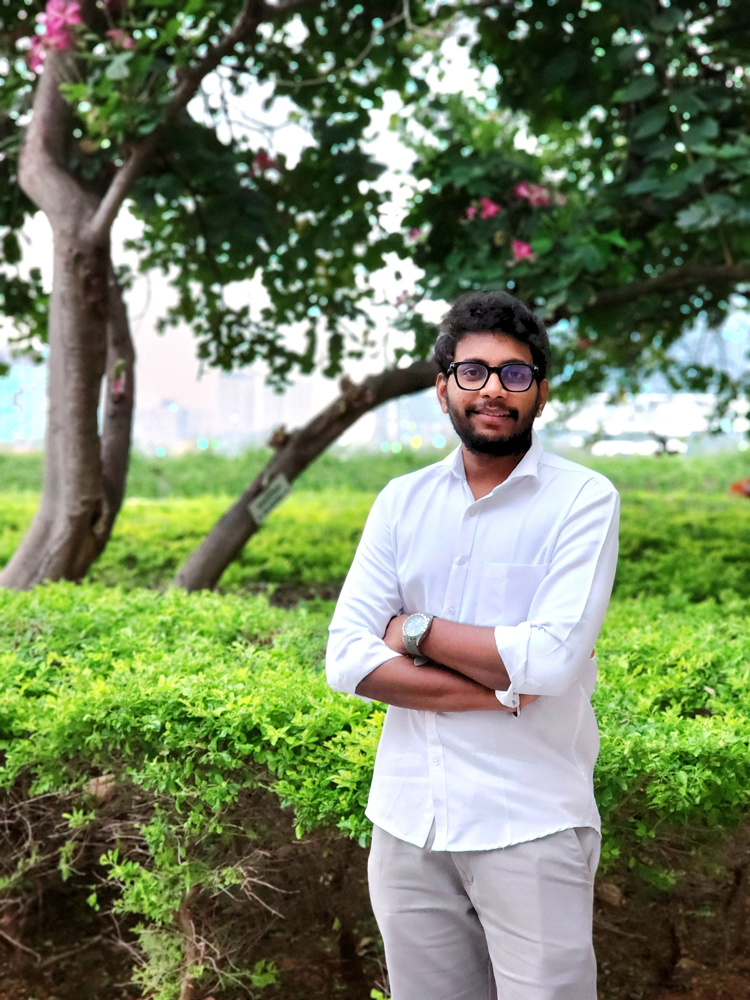

Work Experience
Persistent Systems Ltd, Hyderabad
Role: Software Engineer
Duration: July 2022 – March 2024
Achievements:
- Trained in Core Java, Spring Boot, and Apache Maven.
- Transitioned to Salesforce, gained expertise in Aura and Lightning Web Components.
- Contributed to the project Piramal Finance and Capital Ltd as a junior developer.
Education
Vishnu Institute of Technology, Bhimavaram
Course: B.Tech, Electronics and Communication Engineering
Duration: June 2018 – June 2022
Achievements:
- I secured an overall CGPA 8.2.
- I have done two major academic projects They are:
Detection of Leukemia Cancer using Image Processing Techniques in Labview.
Detection of Fake currency notes using Matlab software.
